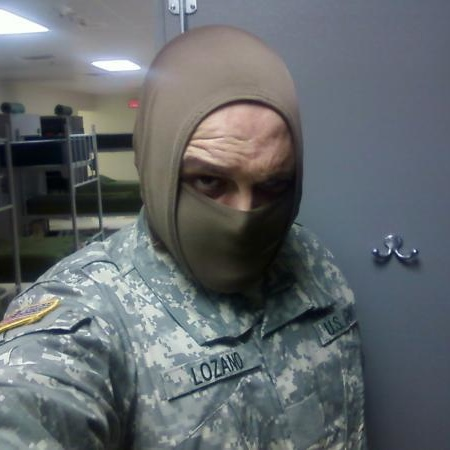

<!DOCTYPE html>
<html>
<head lang="en">
    <meta charset="UTF-8">
    <title></title>
    <link rel="stylesheet" href="../../css/footer.css">
</head>
<body>

<footer>

    

    <p id="info">Tapbots has been creating iOS and Mac apps since 2008. We are a small team of three working remotely from Texas,
        California, and Canada.</p>

    <ul>
        <li>
    <a href="Brian.html"></a>
             <p>IOS DEVELOPER/CO-FOUNDER</p>
            <h4>Brian Lozano</h4>
       <a href="http://www.yahoo.com">Email</a>
        </li>

     <li>

        <a href="Brian.html"></a>
         <p>DESIGNER/CO-FOUNDER</p>
        <h4>Brian Lozano</h4>
         <a href="http://www.yahoo.com">Email</a>
       </li>

        <li>
        <a href="Brian.html"></a>
            <p>MAC DEVELOPER</p>
        <h4>Brian Lozano</h4>
       <a href="http://www.yahoo.com">Email</a>
        </li>
    </ul>

<div id="follow">
<p>Follow @tapbots on Twitter for the latest news.
    For other inquiries, you may email us at company@tapbots.com.</p>
</div>


</footer>


<script src="//code.jquery.com/jquery-1.10.2.js"></script>
<script src="//code.jquery.com/ui/1.11.4/jquery-ui.js"></script>
<script src="js/main.js"></script>
</body>
</html>